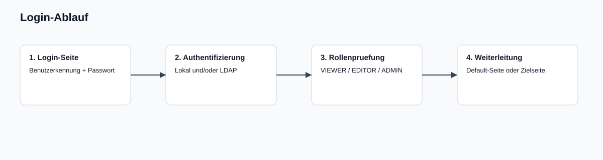
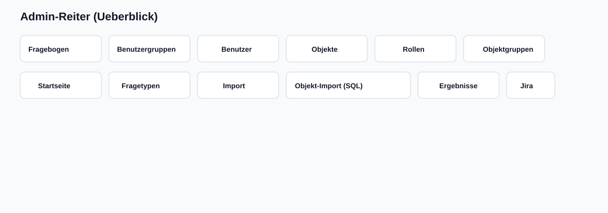

Hinweis: - ADMIN darf alles. - EDITOR sieht und bearbeitet Daten gemaess Sichtbarkeitsregeln (eigene Daten und Daten der eigenen Benutzergruppen).
Anmeldung

Login-Ablauf
Login-Maske
URL: /login
Eingabe:
Benutzerkennung (E-Mail oder UserID/Benutzername)
Passwort
Nach erfolgreicher Anmeldung:
Weiterleitung auf konfigurierte Default-Seite oder
auf die zuvor angeforderte Zielseite.
LDAP/AD
LDAP-Login ist unterstuetzt.
Bestehende lokale Rollen eines bereits vorhandenen Benutzers bleiben erhalten.
Neue LDAP-Benutzer koennen automatisch als Benutzer erzeugt werden (typisch mit Rolle VIEWER).
Konfigurierbare Anmeldeseite
Im Reiter Startseite (Abschnitt Anmeldeseite): - Titel, Untertitel, Hinweistext - Label/Placeholder fuer Benutzer- und Passwortfeld - Text des Login-Buttons - Logo (Upload), Breite, Position
Startseite
Die Startseite ist konfigurierbar und kann enthalten: - Offene objektbezogene Umfragen - Globale Fragekataloge - Abgeschlossene Umfragen
Offene Umfragen
Gruppierung:
nach Objektgruppen oder
nach Objekten
Links Statistik:
Gesamt
Offen
Erledigt
Filter:
Freitext oder feldbezogen (titel:, objekt:, gruppe:, status:)
Pagination:
10 / 20 / 30 / 40 pro Seite
Statuslogik
OPEN: Aufgabe kann gestartet/fortgesetzt werden.
COMPLETED: Aufgabe abgeschlossen.
Bei einer objektbezogenen Umfrage reicht genau ein Abschluss: andere Rolleninhaber sehen sie danach als erledigt (inkl. Zeitstempel und Benutzer).
Umfragen durchfuehren
Einstieg
Objektbezogen: /task/:id
Global: /link/questionnaire/:id
Verhalten waehrend der Durchfuehrung
Pflichtfragen muessen beantwortet werden.
Wenn eine Antwort eine Begruendung erfordert, ist das Begruendungsfeld Pflicht.
Nicht aktive Sektionen/Fragen (Bedingung nicht erfuellt) werden ausgeblendet.
Die linke Navigation/Fragenuebersicht bleibt sichtbar und folgt der aktuellen Position.
Vorbefuellung
Bei objektbezogenen Umfragen kann Vorbefuellung verfuegbar sein: - aus letzter Durchfuehrung (wiederkehrende Umfragen) - aus importierten Prefill-Daten (Objekt + Fragebogen)
Wichtig: - Nicht vorbefuellte Pflichtfragen muessen weiterhin beantwortet werden.
Abschlussseite
Nach Absenden kann eine konfigurierte Abschlussseite angezeigt werden: - Ueberschrift - Formatierter Text (WYSIWYG-Inhalt)
Admin-Bereich - alle Reiter

Admin-Reiter
Fragebogen
Funktionen: - Neu anlegen, bearbeiten, duplizieren - JSON Export/Import - Loeschen mit Rueckfrage: - nur Fragebogen - Fragebogen inkl. Ergebnisse
Benutzer-Mapping in Zuordnungen ueber user_email oder user_id
Zusatz:
Wartung/Bereinigung
Prefill-Massenimport (prefill_bulk)
Objekt-Import (SQL)
Mehrere Importjobs
Importtyp:
Objekte
Personen + Rollen + Objektzuordnung
SQL im Editor pflegbar
Test/Dry-Run + Ausfuehrung
Optionales Loeschen fehlender Datensaetze
Laufhistorie je Job
Ergebnisse
Funktionen: - Ergebnisliste je Fragebogen und Version - Einzel-Export: - Excel - PDF - Gesamt-Exports: - Gesamt-Excel (alle Ergebnisse) - Excel je Fragebogen ueber alle Versionen - Originaldesign (readonly) in separatem Fenster - Originaldesign als PDF - Ergebnis einzeln loeschbar - Jira-Ticket aus Ergebnis erzeugen